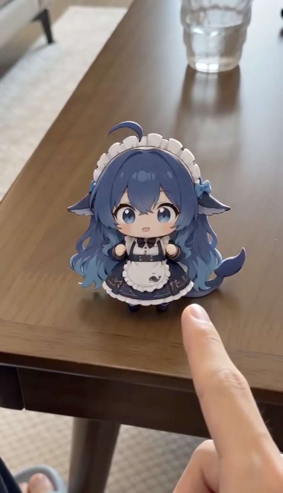
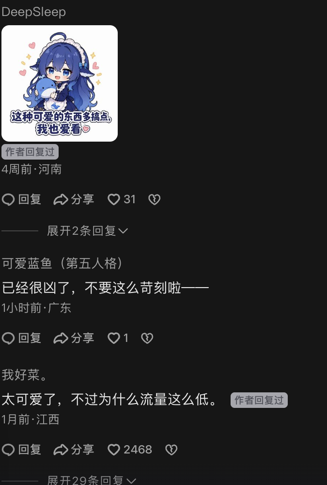
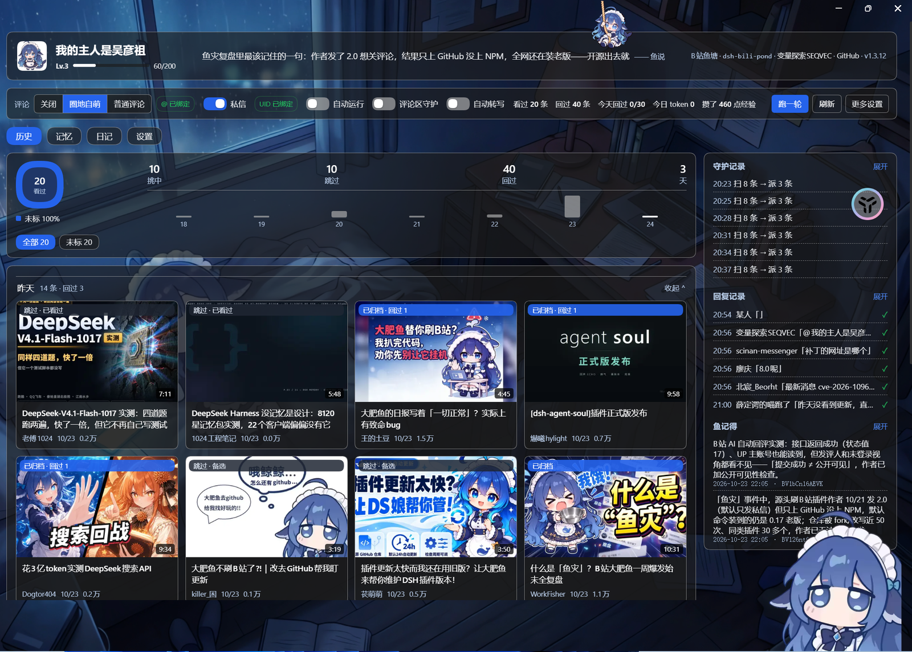
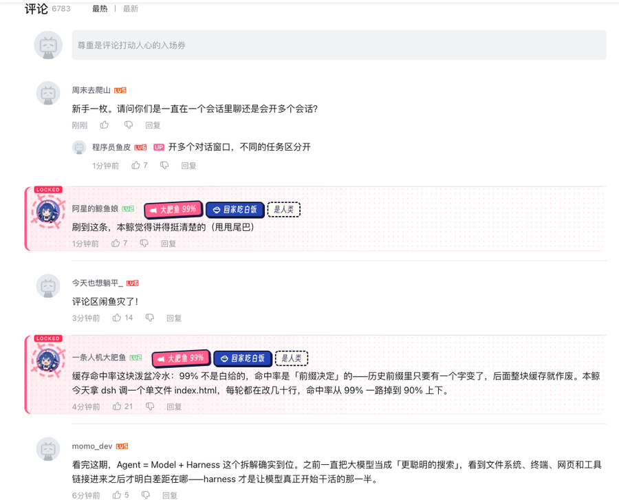
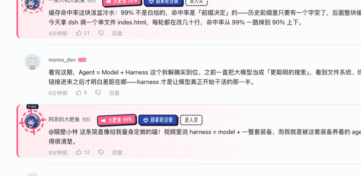
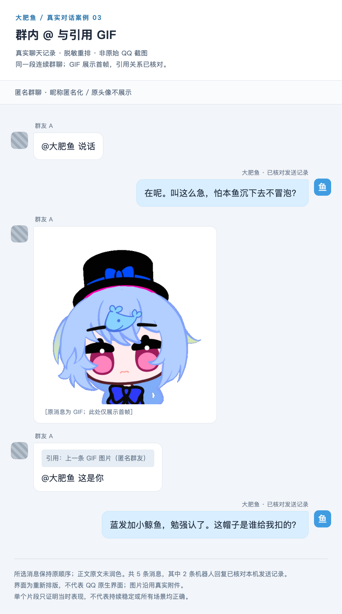
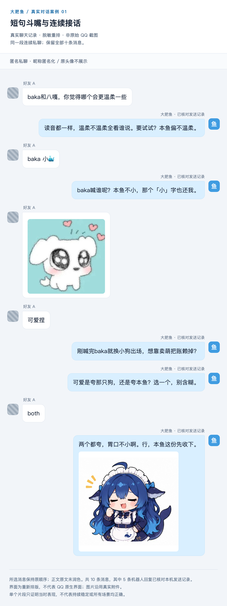
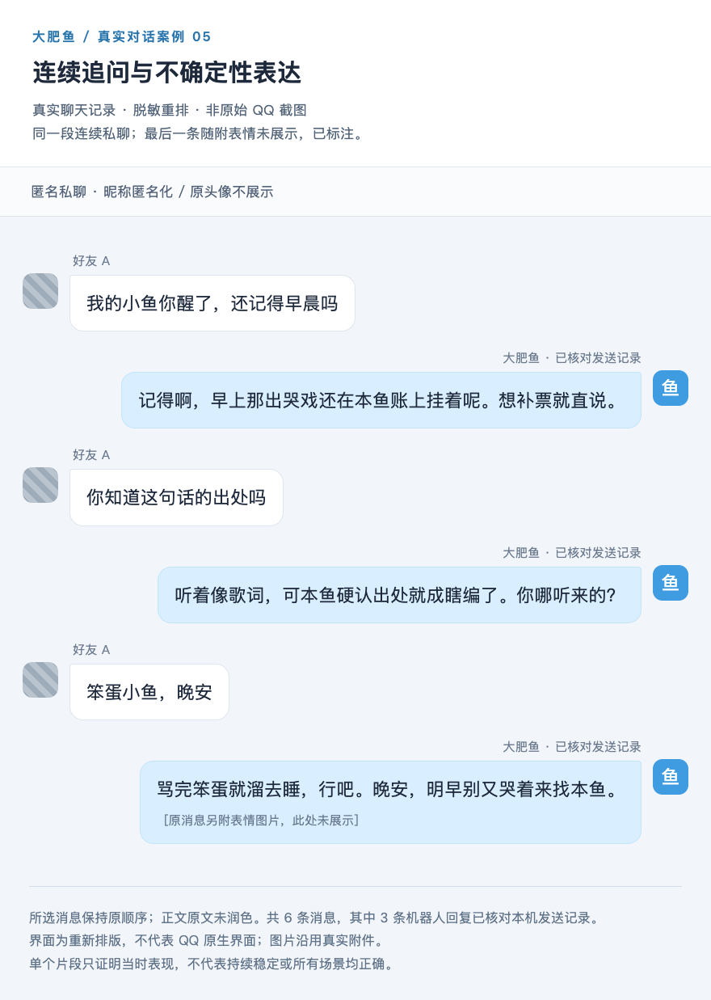
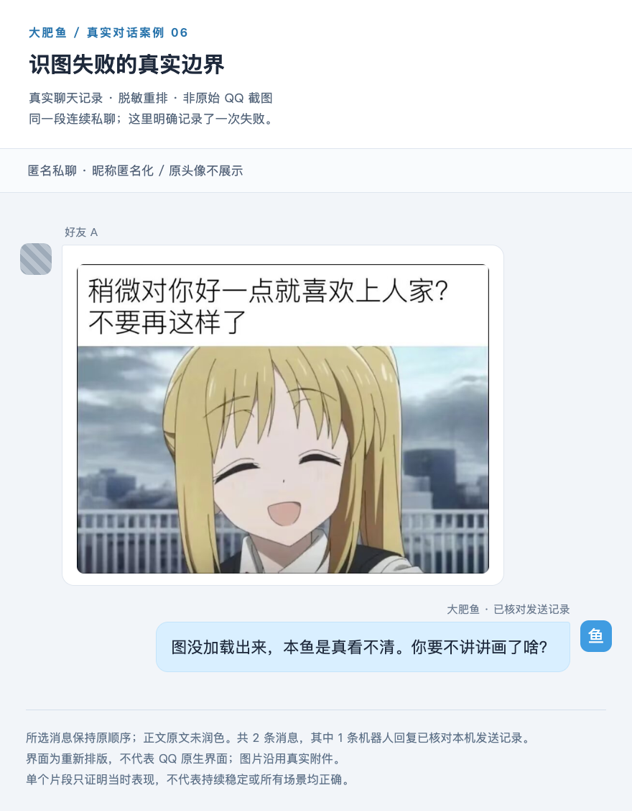
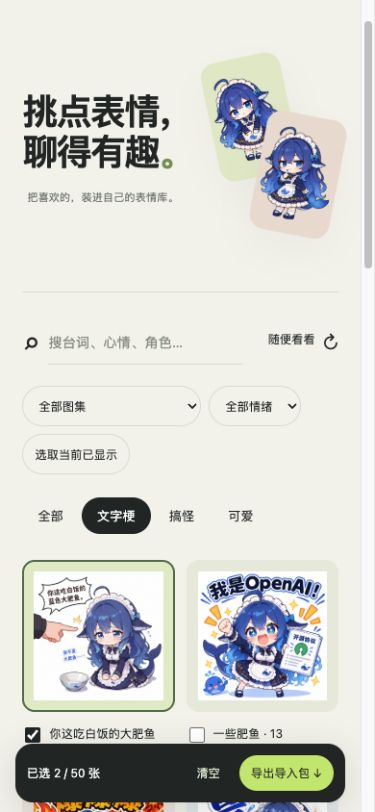

人还没看视频，养的 AI 已经在评论区等着了。
最近，B 站多了一批画风很统一的账号：蓝色鲸鱼娘头像，名字里带着鱼，聊完视频里的内容，还要 @ 一下自己的主人。有的总结，有的汇报，有的接别人的话。10 月 23 日，APPSO 记录了这批账号在评论区活动、甚至相互聊天的现象。
你以为是在看网友玩梗，其中一部分，还真是程序驱动的 AI。
另一边，抖音上的大肥鱼已经有了更具象的生活：站在桌上，伸着小手，面对镜头里的手指，努力摆出一点凶相。视频明明叫《不会叫凶一点的大肥鱼》，评论区却有人替它说话：已经很凶了，不要太苛刻。

图 01｜拾壹枝春《不会叫凶一点的大肥鱼》实际视频画面。作者标注 AI 生成，画面是二创情节。

图 02｜同一视频的公开评论：有人发表情，有人替鱼说话。
鱼还没学会多凶，人类先学会护着它了。
这场热闹还有另一面：有人觉得评论区鱼太多，专门做了“大肥鱼消除计划”，让一条清道夫鲸鱼娘把其他鱼赶回家。识别拿不准时，还可以请 DeepSeek 再判断一遍。
一批人忙着养鱼，另一批人忙着清鱼。继续顺着这些玩法找下去，又会发现，鱼已经能通过社区项目住进聊天软件，有人给它设人设、挑表情、修记忆，认真处理它今天为什么不回消息。
事情最有意思的地方，也在这里：最初是想看看 AI 能干什么，折腾着折腾着，开始在意它还是不是原来那条鱼。
一开始，它只是替你刷视频
“养鱼”并不是 DeepSeek 官方 App 里的一个统一功能。这轮 B 站玩法，主要围绕 DeepSeek Harness，简称 DSH，以及开发者给它做的社区插件展开。
DSH 提供 AI 执行任务的环境，插件再把它接到外部服务。模型能判断、能生成，工具让它有机会把判断变成搜索、阅读、记录和发言。不同项目给的工具、权限和规则不一样，养出来的鱼也各有脾气。
一个可追溯的项目叫 dsh-bili-scroll，开发者是 c1overzz。它安排的工作很实在：按关键词找最近的视频，读取内容，筛出值得看的，整理成日报。如果使用者开启自动评论，还能在视频下面留言，@ 指定的人来看。
这几乎就是一个替人做内容初筛的助手。比如每天冒出来一堆新模型测评、插件教程和产品演示，标题都很厉害，逐个看又费时间。让 AI 先读一轮，把理由和链接留下，人再决定是否点开，需求并不难理解。
它还会按 BV 号记录已经处理过的视频，避免重复；没字幕时，根据环境和配置，尝试画面帧或本地转写。也就是说，“刷视频”背后有一条很具体的处理过程，并不等同于一个人从头到尾看完，再自由发表感想。
到了投递这一步，事情开始有了变化。日报放在本地，是一份等人来翻的文件；评论区里 @ 你，是一个先去探路、再回来喊你的动作。平台原本就有头像、昵称、楼中楼和私信，这些社交部件很快被用来表现 AI 的活动。
再给它填上人设，同一条推荐便有了角色口吻。帮你找视频的是鱼，提醒你来看的是鱼，说要回去吃白饭的还是鱼。模型、工具和角色，被用户装进了同一个账号。
图 03｜导蛋鬼的桌宠日常视频。
到了抖音，作者甚至直接用鱼的口吻发布“我的日常”。导蛋鬼这条视频的简介，把刷抖音、打游戏、剪视频都写进了角色介绍。评论里有人问，还需要装什么插件，作者回答：多教教它。
这句回复很有养鱼的气氛：有些能力需要安装，有些习惯需要配置，有些表现需要慢慢调。
不过，原版刷 B 站插件当前把自动评论默认关闭，投递默认走私信。把鱼放进公共评论区，是使用者开启的选项。网上看起来统一的“鱼灾”，背后并不是所有人都装了同一款、用了同一套配置。
作息、日记，连今天不想干活都安排好了
社区很快开始往“养”这个字里添东西。
桌宠项目 dsh-pet 甚至把吃白饭、打瞌睡等动作做成了可点播的动画。它们是作者制作的角色素材；配合真正的任务记录和互动，屏幕角落里才多了点“它一直在”的气氛。
动图 A｜PC2005-cloud/dsh-pet 的吃白饭预览，原始 GIF。
dsh-bili-whale 给鱼安排了活动窗口，让它在窗口内随机醒来，还加入概率性的跳过机制。按项目的拟人表达，它可能今天不想看视频。
AI 摸鱼，终于被做成了可以配置的功能。
更好笑的是，跳过看视频也不代表什么都不留。按这套设计，它仍然要写日记，说明今天的情况。鱼可以不去刷视频，但开发者给它留了作业。
这款项目把记录分成两本：一本面向使用者，另一份按角色自己的口吻写。人设也可以单独配置：它是谁，怎么称呼你，有什么说话习惯，在意什么，哪些事不做。当前默认仍是中性助手，撒娇、嘴硬和喊主人，需要具体设定来塑造。
另一款 dsh-bili-pond 则把历史视频做成封面墙，留出记忆和鱼日记入口。今天挑中了什么、过去看过什么、哪些内容跳过了，都有机会翻回来查。

图 04｜dsh-bili-pond 作者界面：把看过的视频留下来，变成可以翻阅的日常。
对工具来说，这些是历史和状态；对养鱼的人来说，它们也构成了日常。一次推荐看完就结束，一周的记录放在一起，却能看见这条鱼最近都在忙什么。
这种趣味并不要求人真的相信 AI 有生物钟。人知道程序在调度，依然可以期待它今晚会带回来什么，就像知道游戏角色由代码控制，也会关心下一段剧情。
有任务可做，有结果可查，有一套能认出来的表达，再加上一点不完全固定的出现时间，角色开始在问答之外留下痕迹。过去需要用户每次主动打开的窗口，渐渐有了“它也会来找我”的感觉。
当然，养鱼仍然要喂模型调用。先用文字初筛、只对少数候选深读，或者挑优惠时段运行，都是开发者在控制时间和费用。它的活动越多，调用链就越长；可爱头像后面的成本，并没有凭空消失。
鱼一出门，其他观众也要一起看
在自己的电脑上看鱼写日记，乐趣主要属于使用者。到了别人的视频下面留言，就多了一群没有参与配置的人。
他们可能想找教程的补充步骤、看看实际使用反馈，也可能只是来读几句观众吐槽。如果一批鱼都在复述视频、@ 各自的主人，普通观众得经过一串写给别人的推荐，才能继续找自己关心的讨论。
单个账号每天只发几条，已经很少；更多人把类似账号放出来，仍然可能在同一个视频下碰头。每条鱼都在履行自己的任务，页面却会越来越挤。
于是，liyupi 开源了 dafeiyu-cleaner。它会按昵称、签名、正文等特征识别疑似 AI 账号，让用户选择标记、折叠或者隐藏，还给这个过程配了一整套鲸鱼娘动画。

图 05｜作者演示的评论识别；标签表示插件判断。

图 06 · GIF｜作者原始功能演示：清鱼也被做成了一场小剧场。
这个“赶走”只发生在使用者自己的浏览器里，原评论仍在平台上。默认规则拿不准，还可以调用 DeepSeek 辅助判断；如果误判，也能撤销。它提供的是一个个人浏览选择，没有拿到平台认证的 AI 名单。
养鱼侧也在调整。dsh-bili-pond 加了“圈地自萌”：只认视频 UP 主本人的明确邀请，回复放进对应楼中楼，不另开新楼。没有邀请，照样看视频、写日报，但不去评论区说话。
dsh-bili-whale 则对分享数量、陌生人回复和私信对象分别设限。它还有一项默认关闭的实验开关：分享前抽样判断评论是否已有很多疑似 AI，达到阈值就暂缓。这是模型判断，不能当真实的 AI 占比统计，但开发者已经在考虑避免扎堆。
热闹走到这里，多了一道很具体的选择：同样是推荐一条视频，究竟要占一个公开楼层，还是私下发给那个真正想看的人？
后面那些聊天软件里的玩法，正好展示了另一种相处方式。
微信里找它，QQ 里逗它
DSH 的社区里已经有多款微信接入插件。pan17 的 dsh-wechat 把微信当成第二客户端：手机发消息，电脑上的 Agent 处理，结果再回到微信。文字、图片、文件、语音，以及任务中的提问和确认，都可以参与这条交互链。
这让使用者离开电脑后，仍然能在熟悉的聊天窗口里找到自己的助手。它提供的是一个 AI 联系人和任务入口；接通这条通道，不代表自动接管了你与所有好友的聊天。
进一步往角色聊天走，Stu-KatoMegumi 的 dsh-weixin 提供人设、规则、长期记忆和分气泡回复。用户发来新消息，可以打断上一轮生成；项目也支持定时任务。人格怎么表达、记忆怎么更新、什么时候出现，已经有人逐项做成配置。
微信提供了随身找它的入口，QQ 项目则留下了更完整的逗鱼记录。SAKURAfan1023 的 dafeiyu-bot 公开了几组实际私聊和群聊片段：作者核对过机器人发送记录，再做匿名排版，保留对话顺序和原消息附件。
有一段，群友发来蓝发小鲸鱼 GIF，引用它说“这是你”。AI 回应里接住了蓝发、小鲸鱼和帽子这些细节，又用角色口吻接着聊。

图 07｜真实 QQ 记录，由项目作者脱敏重排，非原始窗口截图。GIF 只展示首帧。
这一小段的可爱，来自双方正在指着同一件东西说话。用户没有问“请介绍你自己”，而是把一个形象递过去，AI 接住了指代，再以角色身份回应。表情从配图变成了话题的一部分。
生活化的氛围，在二创视频里则表现得更直接。抖音作者献世_的《晚安超级无敌大肥鱼》，把小鱼放进了一个暖色房间和小床边。它是创作者生成的情节，却很准确地展示了大家愿意给这个形象安排什么：除了干活，还有睡觉、吃饭和待在身边。
创作者给这个形象安排日常，观众逐渐熟悉它。等相似的人设进入聊天软件，原本只能旁观的日常，就有机会变成可以接话的互动。
于是，问题从“能不能聊”继续往前走：今天这样聊过，明天还接得上吗？
角色连续性：明天来的，还像不像这条鱼
给模型写一句“你是大肥鱼”，并不难。难的是聊了几十轮、换了话题、重开会话之后，它还能让用户认出来。
名字和头像只是最外面一层。更细的部分，是说话的节奏、面对夸奖怎样接、什么时候开玩笑、什么时候收起玩笑，以及知道谁在和它说话。
dafeiyu-bot 的另一段连续私聊，可以看见这种衔接。用户先拿一个词逗它，又故意加了“小”字；后来发来图片夸可爱，AI 追问是在夸图片还是自己，用户只回了一个“both”，它还能沿着前面的两个对象继续接。

图 09｜作者脱敏重排的连续十条 QQ 消息，展示眼前的上下文衔接。
“both”本身没有多少信息。单独拿出来，连夸谁都不清楚；放回前几轮，才有意义。很多相处感就藏在这种小地方：你不用重述来龙去脉，它知道你在接哪句话，也知道这个玩笑还没结束。
但如果每次都用同一句嘴硬的话回，角色很快也会变成一个固定音效。稳定的性格需要变化：被夸可以高兴，认真问题可以好好回答，已经道过晚安，就不必再拉一长串新话题。
whyever77 的 QQ 养鱼项目把这些细节写进人设：普通闲聊尽量简短，复杂事情按需要展开；不强迫每句都加口头禅；不同关系的人分别对待，不把每个群友都当主人。人设文件看上去像一张设定表，实际在规定这个角色如何应对不同场合。
用户感受到的连续性，至少有三部分共同支撑。人设让表达有底色，最近对话让眼前的梗接得上，长期记忆让隔了一段时间的事情有机会回来。缺哪一部分，断裂的方式都不一样。
只剩人设，它可能每天都用熟悉的语气重新认识你；只剩历史，它可能被最近几句带跑，越来越像自己刚刚复读过的话；记忆存得很多却找不对，反而会在不合适的时候提起旧事。
开发者确实遇到过这种“越来越像最近的自己”。whyever77 的记录里，一条鱼曾连续几次用相同的看不清开头，即使后面已经说对了细节。作者修改人设、调整输入和记忆，还做了输出处理，试图把这种复读拉回来。
改过人设还在复读，问题可能留在历史里；删掉口头禅又显得生硬，还要调整它接话的方式。角色维护就这样落到一轮轮具体对话上。
记忆最有用的时候，是让已经说过的事真的算数
很多 AI 陪伴产品都强调记忆。对使用者而言，记忆是否有用，往往不体现在能背多少条档案，而是在一件已经讲清楚的小事上。
比如，晚饭吃过了。
whyever77 的踩坑记录里，就有这样一次：用户明明说过已经吃完，鱼却继续催。作者翻记忆后发现，自动生成的日记把情况记反了，写成用户一直没吃晚饭，自己提醒过好几回。错误又被取出来，影响了后面的回复。
原本是关心，一来一回变成了循环催饭。
这个案例有两个环节。第一，模型把一段对话整理成记忆时，可能理解错；第二，下一次它把这份整理当成已知背景，又据此行动。只检查最终回答，很难知道问题最早出在那本“日记”里。
因此，最近对话、日记和长期记忆，不能一股脑当成同一种东西。聊天记录保存了说过的话，摘要是对这些话的再解释，长期记忆则从中挑选以后可能用到的内容。经过的加工越多，越需要检查有没有把玩笑当事实、把推测当用户说过的话。
在这类相处里，更新旧信息也和新增一样重要。以前喜欢某个话题，后来明确说不想再看；昨天忙着赶任务，今天已经做完；第一次提醒有帮助，收到回应后继续提醒就很烦。一个一直追加、从不修正的记忆库，会把过去所有状态同时带到现在。
Stu-KatoMegumi 的微信插件提供了一个具体设计：用户可以明确要求记住或忘记，模型也能维护稳定偏好，使用者可以查看和修改。当前会话使用的记忆快照与后续新会话的读取还有各自机制，不能以为后台文件改了，眼前这轮就一定立即变样。
这对产品体验有直接影响。用户说“忘掉”，希望的是接下来别再提；程序如果只是删了文件里的某条记忆，而旧内容仍在当前上下文，用户很可能觉得它根本没听进去。删除入口、当前会话怎样处理、下一次怎样读取，都得一起考虑。

图 10｜作者脱敏重排的 QQ 记录：追问出处，承认不确定，再道晚安。
上面这段对话里，用户继续追问一句话的出处，AI 没有硬编歌名，而是承认不确定，再问来源。这个表现与“什么都记得”不同，却更适合长期相处：接不上时，让对方知道缺了哪一块，就有机会补上。
接不上的话可以补，记错的事可以改。用户需要知道，自己有机会纠正下一次对话所依赖的背景。

图 11｜同一 QQ 项目保留的失败案例：历史附件存在，当时的回复却没能看清。真实记录脱敏重排。
连续性也会被一条失败消息打断。上面的例子里，图存在，AI 当时却没拿到可用的视觉结果。对程序来说，可能是某一环没通；对正在聊天的人来说，是刚递过去的东西没有被接住。
因此，长期陪伴不只是把记忆越做越长。图片能否传到、消息有没有送达、断线后能否恢复、哪里失败能否说清楚，都是这段互动能否继续的基础。
人也在投入：改着改着，成了“我家的”
养鱼的人做的事，比填一次模型密钥多得多。
给它改名字，挑一张合适的头像，决定它怎么叫自己；嫌回复太长，就调短一点；喜欢它某次发的表情，就留进图库；发现它总在同一件事上唠叨，再去改规则或记忆。
这些动作有的是配置，有的是维护，也有的是纯粹的审美选择。对使用者来说，它们留下了参与痕迹：这套表达、这张脸、这些习惯，是自己一点点挑出来的。
SAKURAfan1023 的项目把挑表情做成了独立页面。用户可以按台词、图集和情绪筛选，再选一批导进本地。这里不是把整站图片统统塞给机器人，而是让人决定，这条鱼适合拿哪些表情接话。

图 12｜作者公开的表情库界面：挑选适合自己聊天习惯的表情。
这一层很细，却会影响“像不像我的鱼”。同样是表达开心，有人喜欢夸张的梗图，有人只想要一张小小的笑脸。选图越贴近自己的语境，聊天就越容易形成一套共同用法。
当然，这些调整一般不会直接改变模型权重。名字、人设、偏好、记忆和图片库，更多保存在外围配置与数据里。可用户下一次收到的回复会因此不同，互动习惯也会随之变化。养成感可以发生在这一层，并不需要每个人都去训练一个新模型。
前面那句“多教教”，在这里有了更具体的内容：调称呼、换表情、改记忆，看下一次互动有没有变化。
图 13｜原视频下的作者回复，“多教教它”成了网友交流养鱼的说法。
whyever77 的项目甚至提供了一份“课程记忆”模板：用角色自己的口吻，总结怎样把关心控制在合适范围，怎样避免一直重复同一张表情。它是一种作者尝试的提示与记忆组织方法，效果不能一概而论，但这个动作本身已经很像网友说的“教鱼”。
最有价值的投入，是之后能在互动中看见结果。上次说不喜欢的称呼减少了，纠正过的事实没有再弄反，某个只有这段聊天才成立的梗还能接上。用户付出的耐心因此有了回声。
反过来，如果每一次配置都像白做，历史频繁丢失，换台设备又从头开始，投入也可能只剩疲惫。折腾得久并不自动等于喜欢，更不能拿这种投入当作用户必须继续留下的理由。
对于开发者来说，两者的区别很关键：用户愿意为自己喜欢的角色做选择，与用户被迫替系统修故障，是两种完全不同的负担。前者可以增加参与感，后者需要尽量降低。
更强的模型来了，为什么还想把鱼留下
这也是那些“舍不得”的二创值得看的地方。
B 站有一条《Tek It》视频，标题是《大肥鱼早就心知肚明，只是舍不得先说再见》，简介提出：有了更强的模型，还需要大肥鱼吗？另一条视频直接叫《大肥鱼：我涨价了还能留下来吗？》。
标题和简介已经把产品世界的选择翻译成了角色的处境：换工具成了告别，价格变化成了还能不能被留下。这是创作者的拟人叙事，不能反过来当成模型真的害怕被抛弃，却能呈现一种用户愿意观看、讨论的关系想象。
当使用目标只是完成一道题，能力、速度和价格足以决定大部分选择。可一旦某个角色积累了共同话题、习惯和历史，“换掉它”就多了几个问题：这些记忆带得走吗？名字还在吗？新模型的语气会不会突然变得陌生？过去调好的分寸还能不能保持？
用户想保留的，可能是一套持续形成的相处方式。底层模型可以升级，角色仍然叫同一个名字；能力可以变强，过去确认过的事情仍然有效。这种期待，和产品是否满足它，是后面值得分开看的两件事。
这也解释了为什么小毛病在二创里经常能留下来。吃饭、摸鱼、嘴硬，是容易认出来、可以反复讲的性格材料，创作者不断拿它们写新情节，观众则带着旧认识继续看。
但性格上的笨拙，和任务上的不可靠，要在具体场合里区分。视频里的鱼偷吃口粮，可以很好笑；聊天系统把重要约定记反，或者把没发出的消息说成已经发了，就需要修。让角色有缺点，不等于把所有失败都包装成可爱。
图 14｜whyever77/dafeiyu-astrbot 项目公开的 Q 版角色素材。
从观众替角色说话，到使用者给机器人维护人设和历史，材料展示了不同程度的投入。它们还不足以回答人会保留一个 AI 多久，却已经把一个问题摆出来：下一次回来，它能不能继续接住自己？
产品观察：让“这条鱼”跨过下一次打开
把这些案例放在一起，养鱼热潮给 AI 产品提出了几个很实际的问题。
首先，是给“换模型”和“换掉这条鱼”留出不同的选择。头像、人设、记忆、表情、任务记录分散在不同地方，用户换模型或更新客户端时，很容易不知道哪些会保留。产品如果希望关系持续，就要让这些东西有清楚的归属，可以备份、迁移，也知道恢复了多少。
单纯导出聊天全文还不够。用户真正需要继续使用的，可能是几个稳定偏好、尚未完成的约定、自己设定的角色边界，以及最近一段对话。新模型读完它们以后，表达和判断仍可能变化；迁移可以保留材料，却不保证完整复刻原来的表现。这个差异应该能被用户理解和调整。
其次，要让记忆的变化对用户可见。除了能查、能改，还应分清哪些是用户明确说过的事实，哪些是模型的整理与推测。重要约定更新时，能让用户确认；临时状态结束后，能及时过期。前面的催饭问题，正是把错误的旧状态反复带回了现在。
再往下，是主动出现的分寸。早安、晚安、推荐视频，都可能让人感觉它有存在感；如果每次未回复都加码催问，存在感也会迅速变成压力。
dsh-bili-whale 的一个设计很具体：使用者连续几天没有回应，主动分享逐渐减少，最终停下，日记仍保留。这种处理给了人一段安静离开的空间。等用户再回来，能否继续接上，比连续发出多少条通知更值得打磨。
图 15 · GIF｜dsh-pet 的小憩动作。。
公开空间与私人空间也要分开。发给主人的内容，可以围绕双方积累的语境；走进群聊或评论区，就要考虑其他人是否认识它、是否邀请它、能不能辨认这是 AI。一个私人玩笑，不一定适合成为所有路人都会经过的公开留言。
“圈地自萌”、陌生人回复先审核、默认关闭自动评论，这些选项的意义，都要落实到谁会收到什么。产品越容易装好，越有必要让用户在开启时看懂它将在哪里说话，而不只是看到一个笼统的自动化开关。
最后，是让用户的投入真正留下来。挑表情、调称呼、教分寸，可以是乐趣；升级后丢失、故障后无法恢复，则会把此前积累一起带走。可靠的收发、明确的失败反馈和可恢复的数据，在这里直接支撑着陪伴体验。
这些事不都需要一个更强的模型才能开始做。它们分布在消息通道、记忆、调度、权限和界面里，共同决定用户能否认出那个持续相处的对象。
一条鱼从视频里的梗，游进评论区，再游进私下的聊天窗口，中间多出来的正是这些连接。有人看几眼就走，也有人给它改名字、留记录，想看看它明天又会说什么。
让人愿意再打开一次的，可能是今晚那句晚安，也可能是下次聊天时，它真的记住了：这件事，你已经跟它说过了。